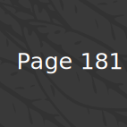
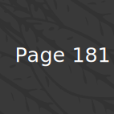

Isobel Rainey
Isobel Rainey has worked for many years as a lecturer in Applied Linguistics: TESOL in the UK, and as a teacher and teacher educator in Europe, South America and the Middle and Far East. She has also co-coordinated English for secondary school projects funded by the Department for International Development (DIFID, formerly ODA) and, for her work on one such project, she received an award from the Peruvian Ministry of Education. Her main research and academic publishing interests concern: the challenges facing, and research priorities of SS teachers of EFL working in non-mainstream contexts; the selection of themes for non-mainstream EFL textbooks; and the affective needs of ESL learners who are living and studying in isolated communities in centre countries. Before retiring, she was a lecturer in Applied Linguistics: TESOL at the University of Surrey, Guildford, England. In retirement, she has coordinated privately funded ESOL projects for asylum seekers and refugees in the UK and worked as a consultant for EFL teacher development programmes in Asia and Latin America. In the course of her career, she has also been an oral examiner and external assessor for several examination boards, including the International Baccalaureate, Trinity College London and UCLES. She divides her time between the UK and Andalusia, where she provides support for secondary school teachers of EFL on a voluntary basis.
 
